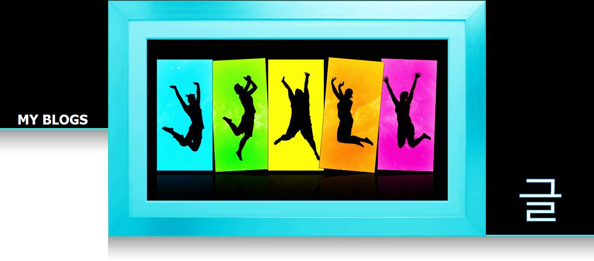
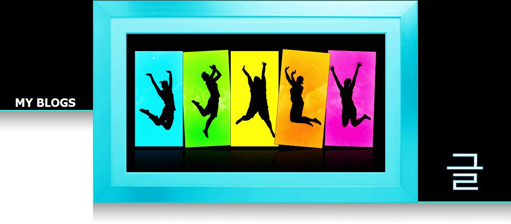
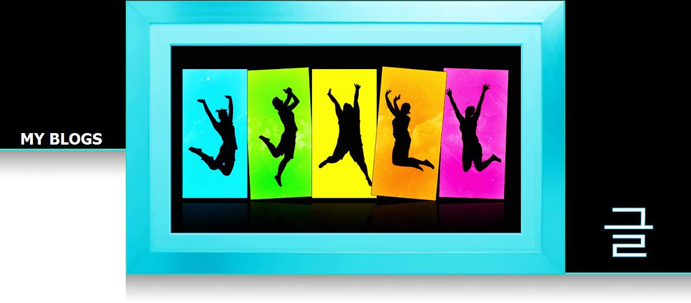
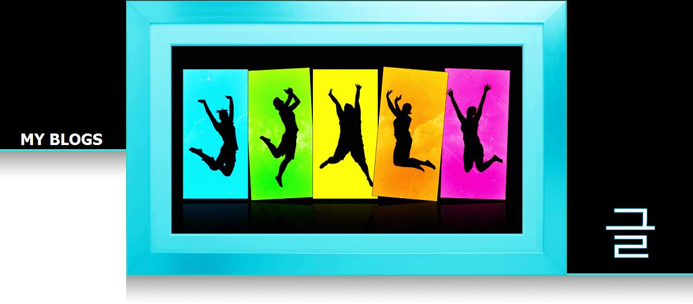

I have written a number of blogs based around the ethics and design of video game development. I have written these blogs on wordpress.com and hope you take the time to view them. To check out my blogs, please follow the link here.
I have a number of working programming projects that you can check out on my Github profile. These projects range from a multiple of different languages and goals. Feel free to look through the code at your own time here.